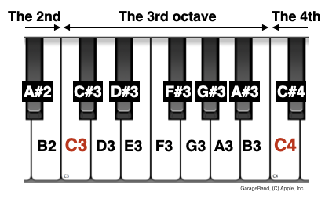

Absolute pitch
Is it a musical gift or a musical curse?
Updated: 2024-09-22
What is absolute pitch (chroma)?
Definition
In musical scientific literature, absolute pitch (commonly known as “perfect pitch”) is defined as an ability to recognize the name of pitch chroma of a given pitch without an external reference. This is opposed to relative pitch, which is also a musical pitch processing skill that recognizes the name of pitch chroma with an external reference. For example, when the “C” is given as a pitch, one with a good relative pitch can easily identify or sing other chromas such as “G#”, “E”, or “B”.
It is important to note that, in the musical context, both absolute and relative pitch refers to the recognition of pitch chroma. That is, simply knowing which note is higher than the other does NOT mean relative pitch in the musical context. Being able to tell their intervals (e.g., a major second), or a solfeggio with respect to the given reference (e.g. “Sol”) is the relative perception of pitch chroma.
Pitch chroma, not just pitch
In a different context (e.g., psychoacoustics), the “absolute pitch” could simply mean the pitch of a given tone in an absolute sense (e.g., 440 Hz), and the “relative pitch” means a ratio of two tones (e.g., 440 Hz / 220 Hz = 1 octave = 12 semitones). However, the recognition of pitch chroma has been considered an essential aspect in the musical context. But what is a pitch chroma?
In a scientific notation of a musical pitch (e.g., “A4”, which corresponds to 440 Hz in a “concert” tuning), pitch chroma is noted in alphabets with a sharp of a flat (C, C#, D, D#, E, …, A, B♭, B) and pitch height is noted in numbers (0, 1, 2, …). Importantly, pitch chroma is cyclic (C, D, E, …, A, B, C, D, E, …) whereas pitch height is linear (the first octave, the second octave, …). See Fig 1 for illustration.
|  |
| Fig 1. Pitch chroma and pitch height. Note C3 and C4 in red. When you go one octave up, you get the same pitch chroma “C”, but the pitch height is increased by one. |
Absolute pitch memory may be something else
Long-term memory. A similar phenomenon exists where a specific pitch can be recalled without an external reference. Often, such a member can be obtained without formal musical training but only with extensive exposure (e.g., music listeners who remember the first pitch of a favorite song or engineers who absolutely remember a test tone [1 kHz]). However, given that the absolute pitch listeners recognize pitch chroma without additional relative pitch computation, the perceptual process of absolute pitch seems to be distinctive from such a case. In (Kim & Knösche, 2017), we proposed to distinguish the former as the absolute memory of pitch (i.e., without separation of height and chroma) and the latter as the absolute perception of pitch chroma.
Working memory. Some musicians with good relative pitch and very good auditory working memory may be behaviorally indistinguishable from absolute pitch listeners, as indicated in a study where auditory working memory predicted “absolute pitch learning” in adulthood (Van Hedger et al., 2015).
How do you measure absolute pitch?
In traditional music education, students write down a short excerpt (e.g., 8 bars) of music, from a tonal melody to an atonal four-voice chorale. The excerpts are arbitrarily created by teachers unbeknownst to students. This traditional method does not allow direct comparisons between different test results.
Music psychologists have been trying to create a standardized test of absolute pitch. Albeit some variabilities in attempted implementations, the invariant part is getting a classification answer (pitch-chroma and/or pitch-height) for a randomly presented tone per each trial. The variant parts include:
- response methods: pen & paper, voice & microphone, clicking on a displayed keyboard figure, radio-button-like user interfaces, pressing a key on a muted digital keyboard
- tone timbre: sine wave, digital piano rendering, actual piano recording, other instruments?
- octave ranges: two to five (It is important to note that the tones MUST be presented over at least two octaves, otherwise the classifications of pitch-chroma and pitch-height are inseparably confounded.)
- masking noise between trials: used in some studies
- minimal distance between trials: more than one octave, or uncontrolled
- scoring methods: correct rates, relaxed correct rates (i.e., ignoring one semitone error and scoring such errors as “CORRECT”), normalized and unnormalized mean absolute deviation
Perfect pitch-chroma, imperfect pitch-height
Another interesting behavioral aspect of absolute pitch is the pitch height (octave) confusion. That is, many musicians with absolute pitch made mistakes in recognizing the pitch height of an unfamiliar timbre (e.g., sine wave) at a similar level as musicians without absolute pitch.
Perfect pitch-chroma, imperfect ears
Also interestingly, many other fundamental percepts do not seem to differ between musicians with and without absolute pitch. For example, frequency discrimination, gap detection (temporal resolution), and interaural time difference discrimination (i.e., spatial resolution) were found indifferent (Waka et al., 2002) (Kim & Knösche, 2016) (Leite-Filho et al., 2023). This suggests that superior peripheral auditory processing is not necessary for absolute pitch (i.e., it is not the “ear” but the auditory cortex) unlike the suggestion.
The better absolute pitch, the poorer relative pitch
Perhaps surprisingly to some, having a better absolute pitch (chroma) can be associated with a poorer relative pitch (chroma). This is not necessarily a causal relationship although one can imagine that a listener with only good absolute pith but no relative pitch would need to explicitly “calculate”, instead of perceiving, a relative solfeggio. (e.g., “Okay, the first note was C# and the second note was F. Then, with the first note as Do (i.e., C#-major), the second note is Mi.”)
Rather, this could be due to a different emphasis on absolute or relative pitch during the early musical training (Miyazaki et al., 2018). Miyazaki and colleagues suggested that absolute pitch is overemphasized while relative pitch is under-emphasized during the early musical training in many East Asian countries (such as Japan and China), in comparison to Western countries (such as Germany and the USA).
Do ones with absolute pitch have different brain structures working differently?
Brain structures
In (Kim & Knösche, 2016), we found higher intracortical myelination (indicated by lower T1 values) in the right planum polare (the anterior part of the supratemporal plane) of musicians with absolute pitch than without. The higher intracortical myelination suggests a suppression of neural plasticity. Given the (near-)necessity of the early onset of musical training in developing absolute pitch, the increased myelination could contribute to the preservation of the pitch chroma template that the absolute pitch listeners utilize, while it remains unclear whether this is an effect of training or a reflection of genetic predisposition.
Lesion cases: which brain area is necessary for absolute pitch?
There are a few case reports where absolute pitch was preserved even after brain regions were found to associate with absolute pitch, and vice versa.
Can adults acquire absolute pitch?
In traditional music education, various training methods have been developed to “learn absolute pitch”. However, as opposed to the claim, the training focuses on developing relative pitch and working memory, which in combination can allow musicians to perform well in traditional absolute pitch tests where the reference note is given at the beginning of the test. Thus, it seems likely that the acquirable skill in adulthood is the relative recognition (i.e., calculation of intervals) of pitch chroma, rather than the absolute perception of pitch chroma.
Recently, however, a group of scientists has argued that absolute pitch can be acquired in adulthood.
In popular culture, this is often used as a prop for a musical prodigy. While having absolute pitch can be highly beneficial for musical composition and conduction, it can be detrimental for on-the-fly transposition, which may be needed for performers (Miyazaki 2004).
In a more recent cross-cultural study (Miyazaki et al., 2018), Miyazaki and colleagues found an inverse relationship between absolute pitch and relative pitch across East Asian and Western countries (Japan, China, Poland, Germany, and the USA). This suggests an overemphasis on developing absolute pitch can harm a more relevant musical skill, relative pitch.
Even more, ones with absolute pitch can be easily irritated by imprecisely tuned tones (Rogenmoser et al., 2020), which could make musicians less adaptive to unfamiliar musical scales and non-modern tunings.
Absolute pitch in Non-Western music scales
In Western scientific literature, absolute pitch has been discussed almost exclusively in the context of the Western music scale (twelve-tone-equal-temperament [12-TET], which is dividing one octave into equal 12 intervals).
Computational perspectives
Algorithmically, the recognition of pitch chroma requires:
- Extraction of pitch
- Learning and rapid access to a pitch chroma template in the absolute fundamental frequencies
- Classification of pitch chroma based on the absolute template
One might imagine the preservation of the absolute frequency information from the peripherals (i.e., knowing which hair cell fires; or even which inferior colliculus neuron fires such as in (Ross et al., 2005)). However, the extraction of pitch relies not solely on the spatial coding but also on the temporal coding. That is, if this idea were true, absolute pitch would be useless for missing harmonics or iterated-random-noise, which is not true. Rather, in the totality of observations, it seems that there exists cortical processing that involves the algorithmic requirements (2) and (3).
But does it matter, really?
After all, a highly precise and absolute perception can be an adaptation to a confined environment. While there are cases where such perceptual skills have undeniable merits, the music and the arts are lots more complicated than just the keen perception (even·in·the·classical·sense). Thus, I agree with (Miyazaki·et·al.,·2018) on that music education over-emphasizing absolute pitch is risky because it can demoralize the development of relative pitch.